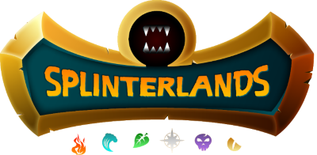

Resources - Splinter-Masters


The resource section is meant to provide a quick overview of the game and underlying technologies. More comprehensive information about each subject can be found via the various links below!
In recent years the terms blockchain and crypto have become popular buzzwords
as mainstream adoption of the field continues. The most well-known cryptocurrencies you've probably heard of
already:
Bitcoin and Ethereum.
The important bits to know about what the blockchain is and exactly what it
does is broken down very well by the blockchain wikipedia page:
"A blockchain is a growing list of records, called blocks, that are securely linked together using cryptography. Each block contains a cryptographic hash of the previous block, a timestamp, and transaction data (generally represented as a Merkle tree, where data nodes are represented by leafs). The timestamp proves that the transaction data existed when the block was published to get into its hash. As blocks each contain information about the block previous to it, they form a chain, with each additional block reinforcing the ones before it. Therefore, blockchains are resistant to modification of their data because once recorded, the data in any given block cannot be altered retroactively without altering all subsequent blocks."
Hive marketing video from WHY HIVE on Vimeo.
If this is your first experience with the Hive blockchain I highly recommend checking out some of the following resources, including a referral from me to create a Hive account!
Hive Onboard: Plenty of great information about Hive, and a referral by me included.
Both tokens were established to bring even more value to the game, though they are vastly different in their utilities. Both tokens can be earned by playing, and both can be spent in game. The purpose of these tokens is beyond the scope of this website, but those interested should check the SPS documentation linked above or the Splinterlands website for more information.
Splinterlands also features a built-in open marketplace for players to buy, sell, and even rent cards to play with. Spare cards that would otherwise be unused can be rented out to other players using this, or any of the multiple third party marketplaces, to create a passive income flow. The use of smart contracts automates this process to make it even more accessible.